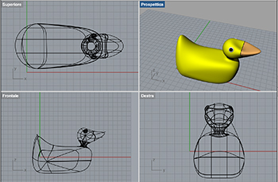
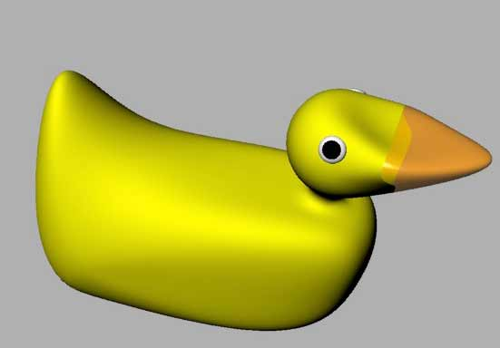
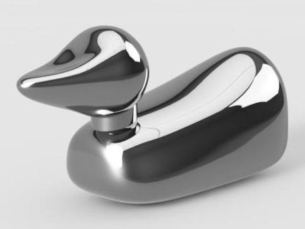

2 - Computer-Aided Design
Intro
The assignment of the second week was get familiar with Computer Assisted Design. It is a broad field and is not easy to choose a starting point. However, as i already know how to use Gimp, Photoshop and Illustrator for 2D drawings and graphics I choose to focus on one of my weaknesses: 3D modelling.
Modelling a Duck in 3D
For this assignment I wanted to try to make a 3D model of my final project proposal. The challenge is that I have no prior experience in 3D modeling and the thing I want to represent is complex: a rubber duck. I downloaded both SketchUp and Rhino for Mac. I started exploring the two software. I appreciated the model warehouse of Google Sketch Up as it can provide a good base to start from to evaluate the tools of the software. Then I tried Rhinoceros for Mac. I was lucky enough to find a tutorial to create a duck (it seems to be a famous tutorial as there are several versions and also a video). I started with this tutorial but then i found more useful the video https://www.youtube.com/watch?v=J0Fy-V0GfmY however the interface and some commands are different. The result was this

and
You can download it from papera.3dm
I found very useful the search box to find the right commands as, sometimes, icons and menus are not very intuitive is you are not familiar with 3D modelling.I also tried Autodesk Fusion, they have a student license that allows the free use of the program. I found intuitive the “sculpture” mode even if it crashed sometimes (maybe is Yosemite?). I started reading the official documentation to understang the different commands. Here is the result:

You can download the fusion file from here papera .
The next step will be to design the interior of the duck placing the technology needed to make it work.
 Attribution, non-commercial, share alike.
Attribution, non-commercial, share alike.